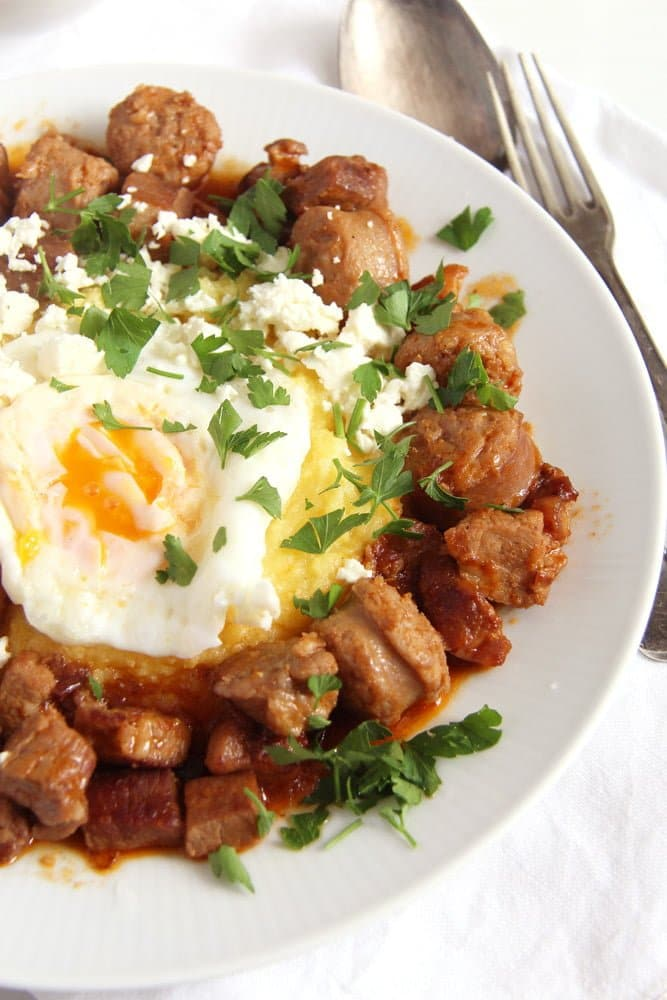

Ingredients
- 500 g/ 1.1 lbs pork neck
- 1 tablespoon lard or 2 tablespoons vegetable oil
- 1 large onion
- 4 small coarsely-ground smoked sausages
- 3 garlic cloves
- 2 tablespoons tomato paste
- 2 bay leaves
- 240 ml/ 8.1 fl.oz/ 1 cup dry white wine
- 4 eggs
- 2-3 tablespoons vegetable oil
- about 100 g/ 3.5 oz feta cheese sheep's cheese is better
- some parsley
- polenta and pickled vegetables to serve
Description
Although this sausage stew served with eggs, cheese and polenta is a traditional Romanian recipe, which has different versions in different parts of the country.
Steps
- Chop the meat into rather small cubes. Pat them dry with some kitchen paper.
- Melt the lard or heat the oil in a cast iron pan. Fry the meat cubes until nicely browned all over. Do this in two batches if your pan is not large enough, the pan should not be overcrowded.
- Return all the meat cubes to the pan and add the finely chopped onion and about ½ teaspoon salt.
- Add ¼ cup water, cover and cook gently for about 20 minutes or until the meat is quite tender. Add a splash of water or so if necessary, if you notice that the dish becomes too dry.
- Start cooking the polenta.
- Cut the sausages into slices, about 1 cm/ 0.4 inch thick. Chop the garlic finely.
- Add the sausages, garlic, tomato paste and bay leaves to the pan.
- Pour the white wine, cover again and continue cooking for 10 minutes or so until the meat is very tender and the sausages are cooked through.
- Adjust the taste with salt and pepper.
- In the meantime heat the vegetable oil and fry the eggs in a large pan.
- Divide the stew between four serving dishes, give a fried egg on top of each dish and crumble some of the feta on top of each plate.
- Sprinkle some parsley over the dish and serve hot with polenta and pickled vegetables.